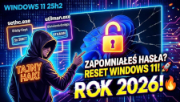

𝗞𝗹𝗮𝘀𝘆𝗸𝗮 𝘇𝗴ł𝗼𝘀𝘇𝗲𝗻́ 𝗻𝗮 𝗛𝗲𝗹𝗽𝗱𝗲𝘀𝗸𝘂: "Zapomniałem hasła do Windowsa, a muszę dostać się do plików NA CITO!" 😅
Formatowanie dysku? Utrata danych? Nic z tych rzeczy.
W najnowszym materiale na moim kanale wziąłem na warsztat 𝗪𝗶𝗻𝗱𝗼𝘄𝘀 𝟭𝟭 (𝘄𝗲𝗿𝘀𝗷𝗮 𝟮𝟱𝗵𝟮) i sprawdziłem, jak w 2026 roku mają się klasyczne metody odzyskiwania dostępu.
Okazuje się, że legendarny trik z podmianą 𝘀𝗲𝘁𝗵𝗰.𝗲𝘅𝗲 (Klawisze trwałe) i 𝘂𝘁𝗶𝗹𝗺𝗮𝗻.𝗲𝘅𝗲 (Ułatwienia dostępu) na Wiersz Polecenia przed ekranem logowania ma się świetnie.
💡 𝗔𝗹𝗲 𝘄 𝗳𝗶𝗹𝗺𝗶𝗲 𝗽𝗼𝗸𝗮𝘇𝘂𝗷𝗲̨ 𝘁𝗼 𝘇 𝗺𝗮ł𝘆𝗺 𝘁𝘄𝗶𝘀𝘁𝗲𝗺:
Zamiast wklepywać długie ścieżki w czarnym oknie CMD, używamy wbudowanego 𝗻𝗼𝘁𝗲𝗽𝗮𝗱.𝗲𝘅𝗲 jako... graficznego eksploratora plików z poziomu środowiska WinRE. Proste, wizualne i odporne na literówki. Następnie resetujemy hasło wygodnie przez 𝗰𝗼𝗻𝘁𝗿𝗼𝗹 𝘂𝘀𝗲𝗿𝗽𝗮𝘀𝘀𝘄𝗼𝗿𝗱𝘀𝟮.
𝗗𝗹𝗮 𝗸𝗼𝗴𝗼 𝗷𝗲𝘀𝘁 𝘁𝗲𝗻 𝗺𝗮𝘁𝗲𝗿𝗶𝗮ł?
✅ Dla specjalistów Helpdesk i IT Support
✅ Dla administratorów przejmujących infrastrukturę
✅ Dla każdego, kto chce zrozumieć, jak działa autoryzacja lokalna w systemie Windows
Pamiętajcie: bezpieczeństwo zaczyna się od świadomości wektorów ataku. Ochroną przed tą metodą jest m.in. wdrożenie 𝗕𝗶𝘁𝗟𝗼𝗰𝗸𝗲𝗿𝗮!.
Ciekaw jestem Waszych doświadczeń. Używacie jeszcze na co dzień tej metody z WinRE, czy od razu bootujecie zewnętrzne narzędzia z pendrive'a? Dajcie znać w komentarzach na youtube! 👇
#Windows11 #ITSupport #Helpdesk #CyberSecurity #SysAdmin #TechTips #ITPL #WindowsServer